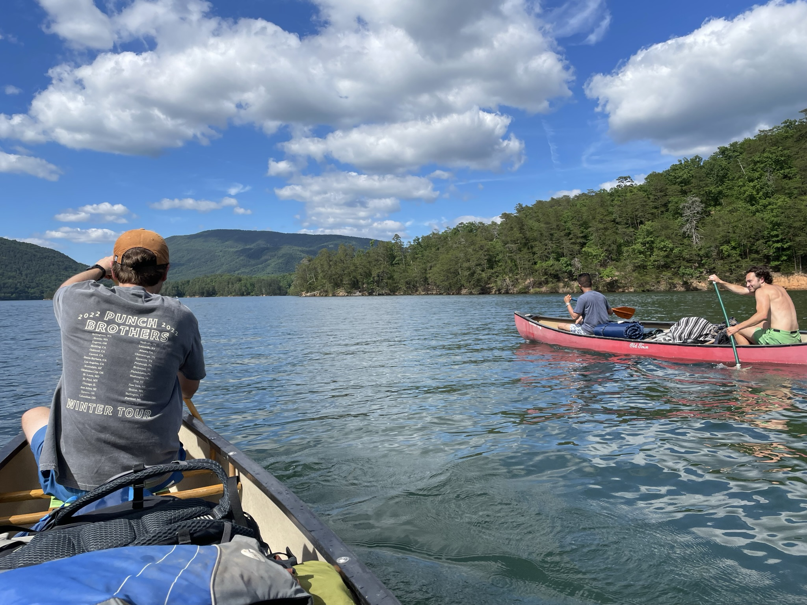
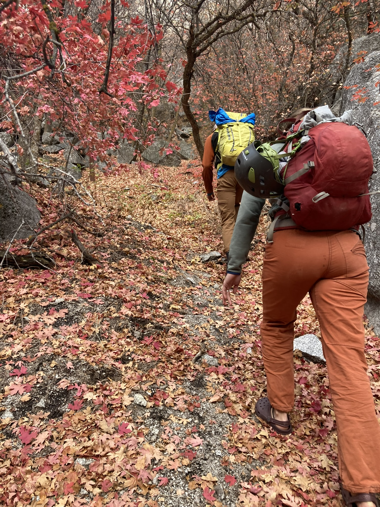

Guiding Services
Adventure-forward wilderness experiences infused with reflection, skill-building, and community.

21-Day Wilderness Intensive
A transformative deep-dive into wilderness living, group cohesion, and personal growth. This immersive program blends rugged backcountry travel with reflective practices, primitive skills, and intentional community-building. Designed for groups seeking challenge, clarity, and long-form immersion.
Pricing: Contact for a tailored quote.
Inquire About This Intensive
4–8 Day Expeditions
High-energy, skill-rich adventures across rivers, canyons, forests, and mountains. Expeditions are customizable based on your group’s goals—whether you want rugged challenge, reflective time, or a blend of both. Includes primitive skills, navigation, group development, and intentional leadership.
Pricing: Contact for options and availability.
Book This Expedition
Weekend Retreats
A warm, grounded escape into nature. Weekend retreats focus on connection, reflection, and group cohesion. Perfect for families, friend groups, community circles, or teams seeking renewal and shared experience.
Pricing: Scaled to group size and retreat focus.
Plan a Retreat
1-Day Crash Courses
Fast-paced, high-energy introductions to wilderness skills, navigation, primitive crafts, fire-building, orienteering, and more. Perfect for individuals or groups wanting a powerful single-day experience.
Pricing: Contact for course details.
Schedule a Crash Course
Custom Group Events
From intimate circles to large retreats, Mr. Nature brings professional-level coordination, logistics, and facilitation. Your group works together—guided by a skilled leader—to create a powerful shared experience rooted in nature, challenge, and community.
Pricing: Fully custom. Contact for planning.
Plan Your EventReady to Begin Your Journey?
Let’s build an experience that fits your pace, your goals, and your spirit.
Book Your Trip